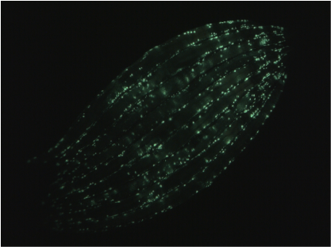
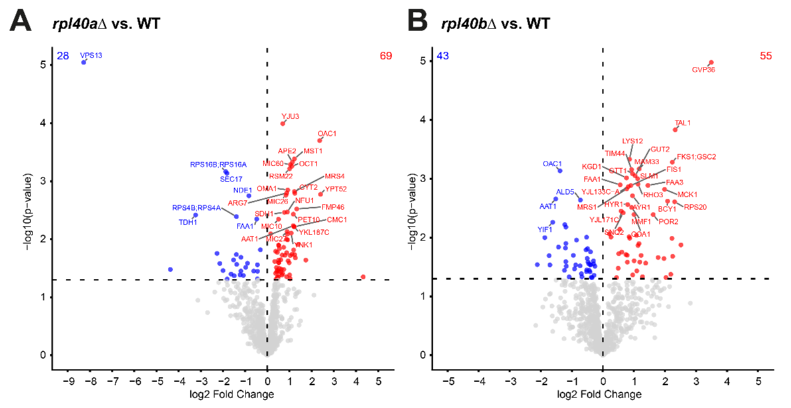
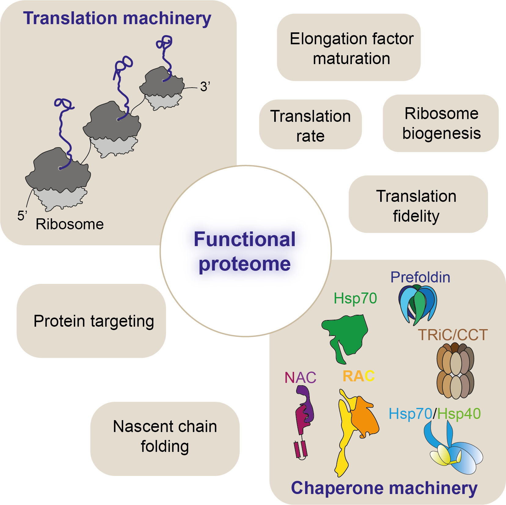

News

New Preprint
08-10-2026
The role of the micronutrient zinc for C. elegans proteostasis maintanince during aging biorxiv.

New Preprint
19-07-2026
Linking ribosome heterogenity with mitochondrial function and lipid metabolism. The role of the Rpl40 paralogs in yeast S. cerevisiae biorxiv.

Article published
30-06-2026
Are ribosomal proteins a source for cellular zinc during stress? Read about our new findings just published in Redox Biology.

Review published
31-01-2026
Protein synthesis controlled by molecular chaperones. Read our new review just published in FEBS Journal.